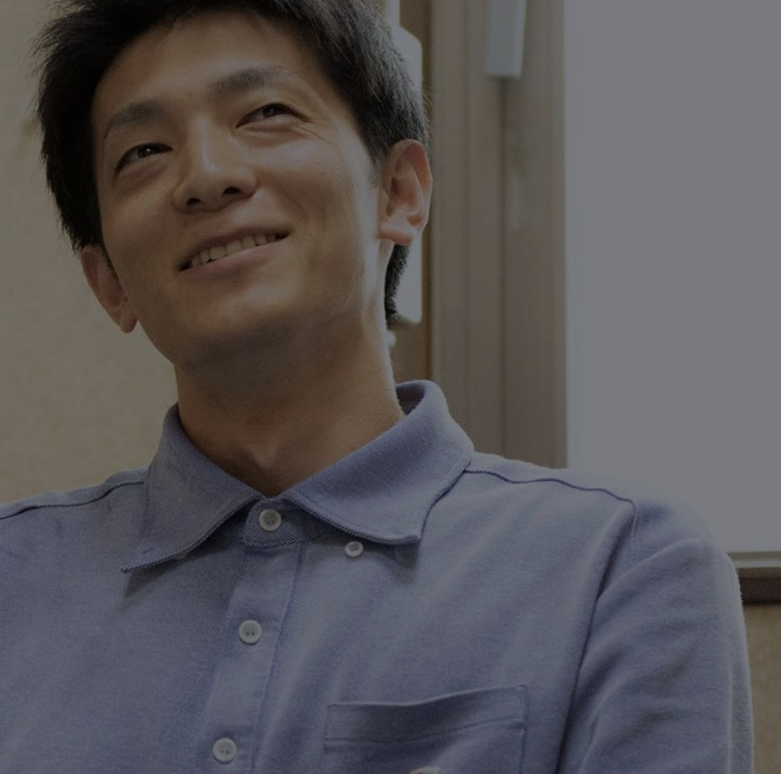
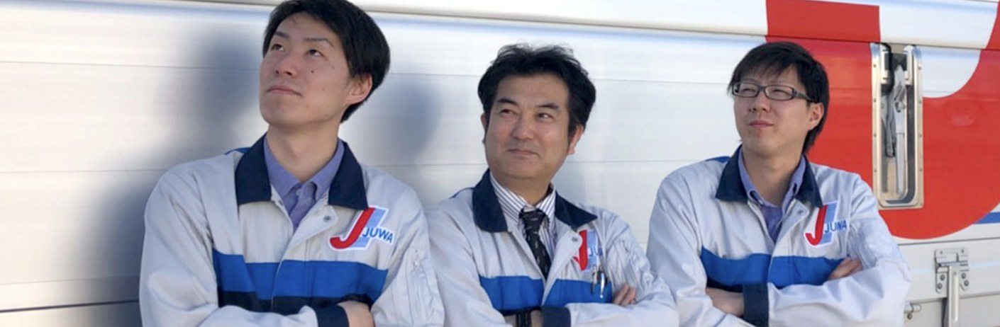
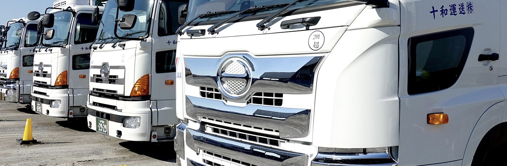
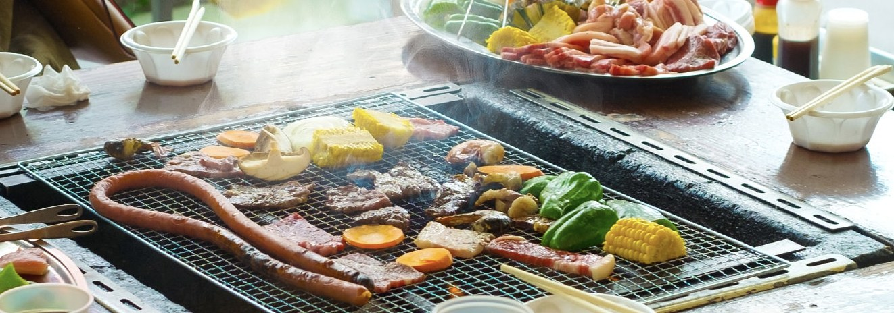
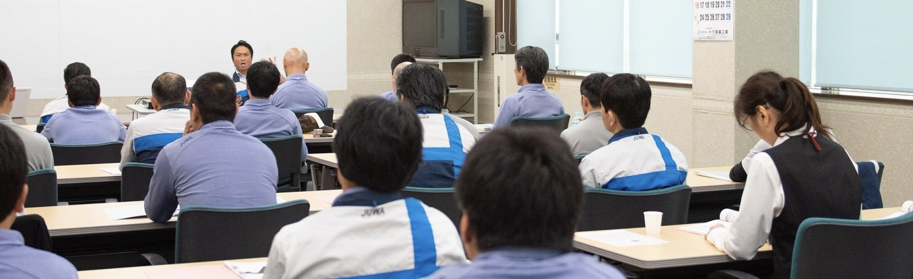
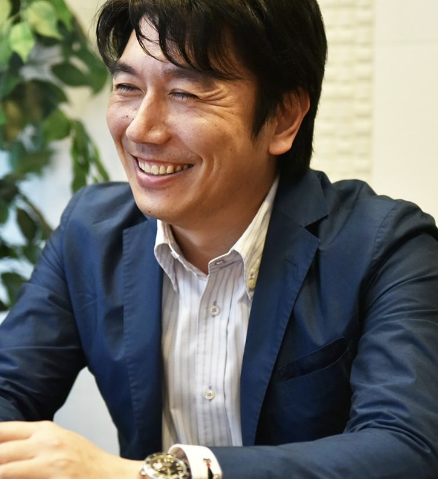

浜

職場の雰囲気は、今まで運送業で働いてきた中で間違いなく一番良いです。困っているときも向こうから声を掛けてくれる。休みも多く、自分の時間がしっかり作れます。
浜野さん水海道支店 ドライバー／平成31年4月入社
茨城県を中心に約20拠点。ドライバーも、倉庫スタッフも、配車スタッフも。十和運送グループは、お互いにフォローし合える仲間を募集しています。
ドライバー／構内作業スタッフ／配車スタッフ正社員・未経験歓迎

1967年
創業約20拠点
茨城・千葉・埼玉・静岡250台以上
車両台数350名超
従業員数107日
年間休日33制度
福利厚生Why Juwa

創業1967年。車両250台以上、従業員350名超。誰もが知る大手企業とのお取引も長年続いています。「地元ではみんな知っている会社」という安心感が、入社の決め手になった先輩もいます。

36協定に基づき労働時間をしっかり管理。乗務職・作業職は基本的に転勤がなく、特別な事情がない限り毎日帰れます。バーベキューなど、社員同士の交流イベントもあります。

入社後は先輩ドライバーに添乗してルートを覚えるところから。中型・大型・けん引などの免許は、社内育英制度で取得費用を会社が負担します。
Common misunderstandings
物流・運送の仕事は、過去に「3K」と言われました。今は変わっています。
全くきつくないと言えば嘘になりますが、一般的な健康の方なら問題なく就ける仕事ばかりです。運行管理者が運行ルートや休憩時間まで気にかけて予定を組んでいます。
36協定に基づき、労働時間はしっかり管理。ドライバー職でも安定した休みが確保でき、自分の時間を有意義に使えます。
はじめに就いた職からのステップアップも可能。もちろん「一生ドライバー」という選択もできます。望む形を会社が支えます。
Message

「みんなで儲けて
儲けて儲けまくろう」
自分だけがよくて、社員の方々やお客さま、協力企業さまが我慢するのは嫌です。まわりがよくて、自分だけが我慢するのも嫌です。自分もまわりもよく、取り巻く環境にも迷惑をかけず、みんなで儲かるということを目指していきたいと思っています。
他人との違いを受け入れられながら、規則性と不規則性に真面目に取り組んでくれる方と、ぜひ一緒に働きたいと思っています。
十和運送株式会社 代表取締役社長 田上 貴義
A day at work
4tトラックドライバー（ルート配送）の例です。
アルコールチェックと健康状態の確認、車両の日常点検からスタート。
関東一円のルート配送へ。入社後しばらくは先輩が添乗します。
休憩は1時間。行きつけのお店の情報交換もドライバーの楽しみ。
お客様先を回って集荷。顔なじみの担当者さんと言葉を交わしながら。
翌日の配送分を積込み。仲間と声を掛け合って作業します。
日報を書いて、トラックをきれいに。
おつかれさまでした。家族と夕食を囲める時間に帰れます。
※ここはサンプルです。募集要項の「午前：配送／午後：集荷／夕方：翌日分の積込み」をもとにした一例で、実際には御社スタッフの1日の流れに差し替えます
Voices
支店も社歴も違う6人の先輩に聞きました。

職場の雰囲気は、今まで運送業で働いてきた中で間違いなく一番良いです。困っているときも向こうから声を掛けてくれる。休みも多く、自分の時間がしっかり作れます。
浜野さん水海道支店 ドライバー／平成31年4月入社

大型連休もあってプライベートが充実。入社してから人間関係でイライラすることが一切ありません。コースが毎回変わるので、運転に飽きがこないのもいいところです。
中村さん水海道支店 ドライバー／平成29年入社

きれいなトラックを見て「この会社はしっかりしている」と感じて入社しました。今では子どもたちと一緒に夕食が取れています。この生活の安定感が一番です。
強矢さん水海道支店 ドライバー／平成26年入社

休みがしっかりしていて、労働時間にも満足しています。運行管理の資格取得も会社が費用面で支援してくれることになり、いま勉強中です。
伊澤さん水海道支店 ドライバー／平成15年入社

飲食店からの転職です。自分で段取りを組んでマイペースに回れるのが良いところ。入園式や運動会に休みがもらえるので、家族との時間も増えました。
山田さん水海道支店 ドライバー／平成22年入社

無理して仕事をさせないところがいい。支店の社員も支店長も、人柄がなんといってもいいです。十和運送は人柄の会社だと思います。
新堀さん成田支店 ドライバー／昭和61年入社
※既存の採用サイト「十和で働く人」のインタビューから抜粋・要約しています
Benefits
毎日気持ちよく仕事をするためには、福利厚生の充実が欠かせません。
社内育英制度により、業務に必要な免許の取得費用を会社が負担します。対象は普通・準中型・中型・大型・小型特殊・大型特殊・けん引免許。※取得後3年以内に退職の場合は取得料金の返還をお願いしています
ドライバーから配車係へ、さらに所長へ。本人の希望を聞きながらの職種変更の例は多数あります。約20拠点あるからこそ、ステップアップのチャンスも豊富です。
中途入社の方には職種に応じて最大5日間の研修を実施。現場では事業所の教育担当ドライバーが添乗し、ルートや作業を丁寧にお教えします。
Questions

採用担当 ○○ ○○（総務人事部）
「応募の前にちょっと聞いてみたい」も大歓迎です。仕事内容のこと、休みのこと、免許のこと。どんなことでも気軽にご連絡ください。職場見学のご案内もしています。
※ここはサンプルです。実際の採用担当者の写真・氏名・メッセージに差し替えます（任意パーツのため削除も可能です）
Open positions
気になる職種をタップすると詳細が開きます。